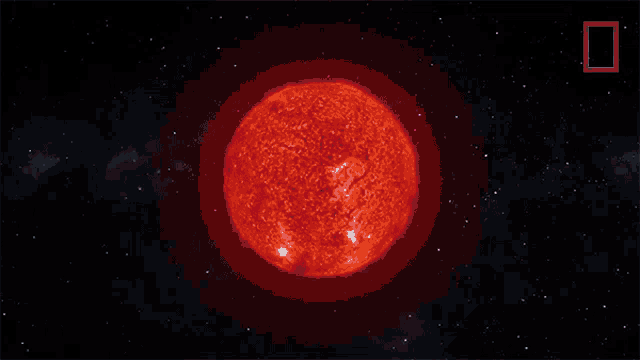
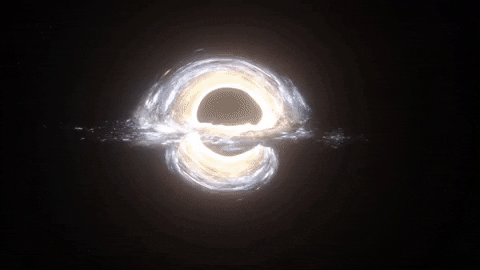
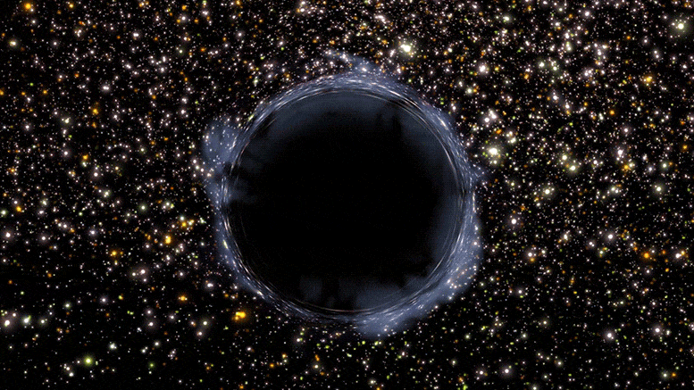

Black Holes
What is a Black Hole?
How is a Black Hole formed?
its core becomes unstable and collapses and its outer layers get blown away.
that its volume becomes zero and density becomes infinite.
Types of Black Holes

Stellar
When a star with more than eight times the Suns mass runs out of fuel, its core collapses, rebounds, and explodes as a supernova. Whats left behind depends on the stars mass before the explosion. If it was near the threshold, it creates a city-sized, superdense neutron star. If it had around 20 times the Suns mass or more, the stars core collapses into a stellar-mass black hole
Explore More
Super Massive
Almost every large galaxy, including our Milky Way, has a supermassive black hole at its center. These monster objects have hundreds of thousands to billions of times the Suns mass, although some scientists place the lower boundary at tens of thousands.
Explore More

Intermediate
Intermediate black holes are those which have a mass somewhere between stellar and supermassive black holes and in fact, astronomers theorize they are an evolutionary in-between phase for these cosmic behemoths.
Explore More

Primordial
Scientists theorize that primordial black holes formed in the first second after the birth of the universe. In that moment, pockets of hot material may have been dense enough to form black holes, potentially with masses ranging from 100,000 times less than a paperclip to 100,000 times more than the Suns.
Explore More